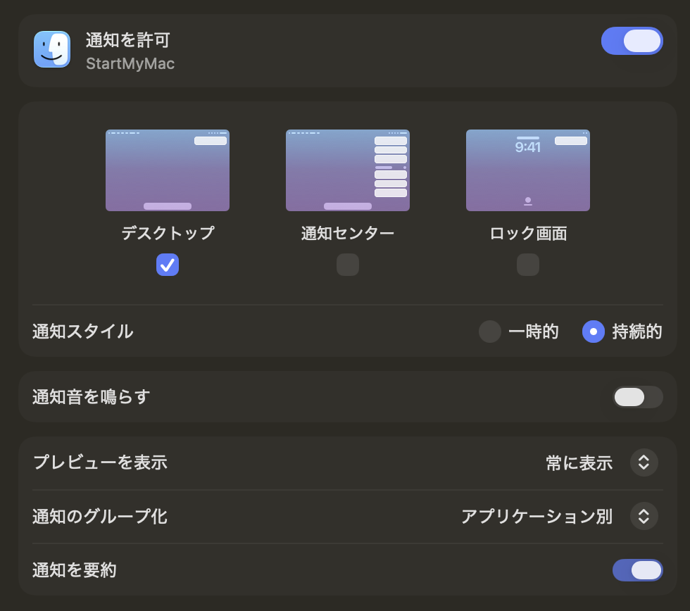

どんなアプリ？
StartMyMac は、Automator の起動時ワークフローと、ショートカット.app の終了時ワークフローを、設定画面のある macOS アプリに置き換えるために生まれました。NAS などのネットワーク共有をつなぎ直し、その共有を使うアプリやフォルダを順番に開く、毎回の準備をまとめます。ネットワーク接続を使わず、アプリとフォルダだけを開く設定もできます。
待機時間、接続先、開くアプリとフォルダを日本語の設定画面で調整できます。設定画面を閉じてもメニューバーに常駐し、手動実行、中止、ログの確認にアクセスできます。
- 01 / 接続を整える共有をつなぎ直す待機 → 解除 → 待機 → 接続
- 02 / 道具を開くアプリを順に起動再接続する場合は接続成功後に実行
- 03 / 作業を始めるフォルダを表示Finder で開き、結果を通知
主な機能
- ネットワーク共有への再接続：有効な再接続先がある場合に、マウント中のネットワークボリュームを解除し、設定した有効な接続先を一覧順に接続します。SMB、AFP、NFS、HTTP / HTTPS（WebDAV）の URL を受け付けます。実際の接続は macOS と接続先の対応状況に依存します。
- 共有を使わない起動：接続先を空または全件無効にすると、共有の解除・再接続・解除後の待機を省略します。接続中の共有を維持し、アプリ起動とフォルダ表示を実行できます。
- アプリとフォルダの準備：複数のアプリを順に起動し、その後に複数のフォルダを Finder で開きます。項目ごとの有効・無効と順序を変更できます。
- 入力切り替えの補助：Finder を前面にして「英数 → かな」のキーを送信します。必要な場合だけ利用でき、設定で省略できます。
- 待機時間とタイムアウト：起動後、解除後、アプリ起動前の待機時間を調整できます。処理が終わらない場合のタイムアウトも設定できます。
- 実行前の確認とログ：「操作せず確認」で起動時の解除対象と予定手順を確認し、「今すぐ実行」で開始。結果は通知と実行ログで確認し、ログを書き出せます。
- ログイン時の自動実行：設定後に自動起動を有効にすると、次のログインから準備を開始します。起動時と終了時の処理を同時に実行しません。
- 作業終了時の片付け：メニューまたは Ctrl + Shift + W で、通常のアプリ終了・共有解除・ディスプレイスリープを順に実行します。Mac の電源は切りません。
起動時に実行する順序
- アプリ起動後に待機します。初期値は 7秒です。
- 有効な再接続先がある場合、マウント中のネットワークボリュームをすべて解除します。ローカルディスク・起動ボリューム・仮想ファイルシステムは除外します。
- 解除後に待機します。初期値は 30秒です。有効な再接続先がなければ、この待機も省略します。
- 有効な場合、Finder に英数キー、0.5秒後にかなキーを送信します。
- 設定した有効な接続先を順にマウントします。接続先がなければ省略します。
- 有効な接続先がすべて接続成功した場合、または有効な接続先がない場合に、初期値 5秒待機して有効な指定アプリを順に起動します。有効なアプリがなければ、この待機も省略します。
- 指定したフォルダを一覧順に Finder で開きます。
- 処理結果と日時を通知します。失敗の詳細は実行ログで確認できます。
各待機時間は0〜3600秒、操作のタイムアウトは5〜600秒（初期値60秒）です。保存済みの設定がある場合は、その値を引き継ぎます。タイムアウト欄の範囲外入力を拒否し、1〜4秒や空欄のまま確定すると直前の有効値に戻します。アプリ・フォルダの存在確認と OS への起動・表示要求には、それぞれ操作タイムアウトを適用します。
接続に1件でも失敗すると、アプリ起動とフォルダ表示を省略します。接続先への依存を個別に判定せず、登録したすべてのアプリ起動・フォルダ表示を省略し、エラーを通知します。解除やキー送信に失敗した場合も接続処理は続け、アプリ起動・フォルダ表示の失敗は残りの項目の処理を続けます。マウント情報を取得できない場合や設定が不正な場合は、その時点で後続処理を停止します。
作業終了時のワークフロー（1.3）
メニューバーの「システム終了を実行」、または StartMyMac の起動中に Ctrl + Shift + W（⌃⇧W） を押して開始します。他のアプリを操作中でも使えます。メニュー名は「システム終了」ですが、実際の処理は次の片付けとディスプレイスリープです。
- 「お疲れさまでした٩( 'ω' )و」と現在の日時、処理を開始する旨を通知します。
- 3秒待機します。
- 現在のユーザーの通常のアプリに終了を要求し、終了完了を待ちます。Finder・StartMyMac 自身・メニューバー専用アプリ・バックグラウンドプロセスは対象から除外します。
- 3秒待機します。
- マウント中の全ネットワークボリュームを解除します。再接続先の一覧が空でも、一覧にない共有も対象です。ローカルディスク・起動ボリューム・仮想ファイルシステムは維持します。
- 7秒待機し、ネットワークボリュームが再マウントされていないことを確認します。
- ディスプレイスリープを OS へ要求します。
Mac の電源オフ・ログアウト・システム全体のスリープは行いません。StartMyMac や macOS の終了に連動して自動実行する機能ではありません。
アプリの強制終了や共有の強制解除は行いません。未保存の書類の保存確認が出たら応答してください。終了拒否・終了待ちのタイムアウト・中止があれば、後続の解除とディスプレイスリープを停止します。共有の解除失敗や残存・再マウントを検出した場合も、ディスプレイスリープを省略します。終了待ち全体と各解除・スリープ要求には設定した操作タイムアウトを適用します。3秒・3秒・7秒の待機は固定です。
未保存の設定変更がある場合は先に保存してください。未保存の変更がなければ、初回の起動設定保存前でも利用できます。開始通知は成功を示すものではなく、完了・エラーの追加通知は出しません。結果は「設定・実行ログ…」で確認します。通知が未許可でもログに記録して続けます。「操作せず確認」は起動時専用で、この終了時ワークフローには対応しません。
既存のショートカット.app などの Ctrl + Shift + W 割り当てを解除してください。登録できない場合は設定画面に理由を表示します。割り当てを解除して StartMyMac を再起動すると再登録します。メニューからも実行できます。
初回の使い方
以下は検証用アプリにアクセスできる方に向けた手順です。一般向けのダウンロードは用意していません。
- アプリを開く：StartMyMac.app を「アプリケーション」へ移動して起動します。初回は設定画面を表示し、起動時ワークフローは自動実行しません。
- 接続先を自分の環境に合わせる：初期設定を確認し、共有名まで含む URL、ユーザー名、パスワードを入力して「設定を保存」を押します。例：
smb://server.local/Shared%20Files。認証情報は URL に含めず、専用欄へ入力します。共有が不要なら接続先をすべて削除するか無効にします。保存だけでは処理は始まりません。 - 権限を確認する：入力切り替えを使う場合は「アクセシビリティ設定」から許可します。「通知を許可」を押し、通知のおすすめ設定を確認します。macOS がローカルネットワークの許可を求める場合は接続に必要な許可を設定します。
- 開くものを選ぶ：「アプリを追加…」「フォルダを追加…」で項目を追加し、待機時間と順序を調整して保存します。「パスを入力」なら、まだ接続していない共有上のフォルダも絶対パスで登録できます。
- 操作せずに確認する：「操作せず確認」で解除対象と手順を確認します。このモードでは待機・解除・接続・キー送信・起動・表示・通知を行いません。URL・パスの形式と、有効な接続先がある場合のマウント情報を確認します。接続の成否・認証・権限・アプリやフォルダの実在は検査せず、ログの件数は予定手順を表します。
- 手動で動作を確かめる：共有上で使用中のファイルを閉じてから「今すぐ実行」を押し、結果とログを確認します。編集中の設定がある場合は先に保存してください。
- 次のログインから自動実行する：「アプリ起動時にワークフローを自動実行」を有効にして保存し、「ログイン時にStartMyMacを起動」も有効にします。承認待ちの場合はログイン項目の承認画面で許可します。置き換える Automator のログイン項目は外し、次のログインで結果を確認します。
設定画面を閉じた後も、メニューバーから設定・ログ・起動時の実行・終了時の実行・中止・アプリ終了を選べます。設定保存後に起動時の自動実行が有効なら、次のアプリ起動時に実行します。起動済みの StartMyMac を Finder から再度開いた場合も、未保存の編集や実行中の処理がなければ再実行します。ログイン項目のオン・オフは保存ボタンを押す前に OS へ反映されます。自動起動をやめる場合は、設定でログイン時の起動をオフにします。
通知のおすすめ設定
準備が終わったことを見逃さず、起動時の音は控える設定です。StartMyMac の「通知を許可」で許可した後、システム設定 → 通知 → StartMyMacを開いて調整します。ここでのおすすめは使い方に合わせた設定例で、アプリの初期値ではありません。

画像と異なるおすすめは「通知を要約：オフ」です。添付画像ではオンですが、StartMyMac の短い結果通知は、日時・完了件数・エラー件数を元の文面で確認できる設定をおすすめします。
| 項目 | 推奨値 | 理由・補足 |
|---|---|---|
| 通知を許可 | オン | 起動時の結果と、終了時の開始通知を受け取ります。 |
| デスクトップ | オン | 作業画面で準備完了を確認できます。 |
| 通知センター | オフ | 日々の完了通知をためない設定です。後から通知を見返したい場合はオンにします。 |
| ロック画面 | オフ | ログイン後の確認を基本にし、ロック画面への結果表示を控えます。 |
| 通知スタイル | 持続的 | 閉じるまで画面に残るので、完了やエラーを見逃しにくくなります。 |
| 通知音を鳴らす | オフ | 毎回のログイン時に音を鳴らさず、表示で確認します。 |
| プレビューを表示 | 常に表示 | 日時と各処理・エラーの件数を確認しやすくします。共有環境では「ロックされていないときのみ」も選べます。 |
| 通知のグループ化 | アプリケーション別 | 通知センターをオンにする場合、StartMyMac の通知をまとめられます。オフの間は表示に影響しません。 |
| 通知を要約 | オフ | 短い結果通知を要約せずに読みます。添付画像はオンのため、この項目だけ変更をおすすめします。 |
起動時の結果通知には実行日時、接続・アプリ起動・フォルダ表示の件数、エラー件数が表示されます。終了時は開始通知のみで、結果はログで確認します。エラーがあった場合の詳細は、メニューバーから実行ログを開いて確認してください。通知をオフにしてもワークフローは実行されます。起動時の処理を途中で中止した場合は完了通知を出しません。
通知が出ない場合は、通知の許可と集中モードも確認してください。macOS のバージョンや Apple Intelligence の対応状況により、項目名や「通知を要約」の有無は異なります。各設定の意味は Apple の「通知」設定ガイドを参照しています。推奨値は StartMyMac の使い方に合わせたものです。
使う前に確認したいこと
- 解除対象は設定した接続先だけではありません。起動時は有効な再接続先がある場合だけ、終了時は再接続先の有無にかかわらず、macOS がネットワークボリュームと判定するマウント中の共有をすべて対象にします。使用中の共有は強制解除しません。「操作せず確認」で対象を確認してください。
- 実行するのはユーザーのログイン後です。ログイン画面や FileVault の解除前には動作しません。
- アプリ起動は OS へ起動を依頼するところまでです。Docker エンジンなど、各アプリ内部の準備完了までは判定しません。
- フォルダのタブ・ウインドウ表示は Finder 側の設定に従います。アプリを移動した場合や共有のマウント名が変わった場合は、登録した絶対パスを修正してください。
- 英数・かなキーの効果は入力ソフトやキー設定に依存します。日本語入力の初回遅延が改善することや、ネットワーク接続が安定することを保証する機能ではありません。
- 中止しても、すでに終わった解除・接続・起動・表示・アプリ終了は元に戻りません。タイムアウトや中止の後に OS 側の操作が完了する場合もあるため、Finder と対象アプリで状態を確認してください。
設定・認証情報とログ
接続先、ユーザー名、アプリ・フォルダのパス、待機時間などは Mac 内に保存し、パスワードは macOS キーチェーンのアプリ専用項目に保存します。設定やログにパスワードを埋め込みません。接続時の認証情報は、指定した共有への接続に利用します。
実行ログは直近の起動時・確認モード・終了時のいずれか1回分をメモリに最大500行保持します。次の実行開始時に置き換わり、アプリ終了で失われるため、必要なときに「ログを書き出す」で保存します。接続先名、パス、終了対象のアプリ名、エラーが含まれる場合があるため、共有する際は内容を確認してください。詳しくはプライバシーポリシーをご覧ください。
開発状況
現在は開発中・非公開です。アプリ本体とソースコードの一般公開・配布は行っていません。公開時期・価格は未定です。機能や画面は今後変更される場合があります。
掲載内容は 時点の1.3の実装と README に基づきます。アクセス権のある利用者向けには Private リポジトリの Releases で1.3を配布しています。1.3は Apple Silicon / Intel 向けの Universal ビルド、Developer ID 署名と Apple の公証、138項目の自動テストを確認しています。終了時の処理は模擬処理で検証しており、実機での終了操作は未検証です。1.1では実環境での動作確認報告がありますが、1.3の実際の共有への接続・ログイン時の動作・キー割り当て・保存確認・終了時の動作は、利用環境での確認が必要です。
掲載アイコンは、この紹介ページ用に制作した独自の図案です。検証版のアプリアイコンとは異なります。通知設定の画面写真は、提供された macOS の実際の画面を掲載しています。